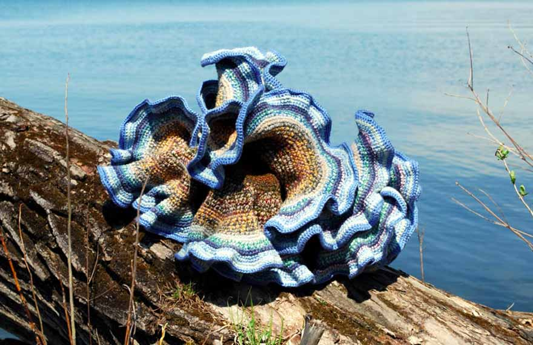

How is Democracy Doing?

A distinguished panel, with keynote speaker Francis Fukuyama, will discuss how it is likely to fare in the years to come, and whether it will reign triumphant, or find itself increasingly under siege across much of the world.
Join the ConversationCornellians to Anatolia

Blizzards, bad roads and "unsettled" country: nothing daunted three Cornellians on an archaeological expedition to Anatolia in 1908. But their courageous story has been lost to Cornell history – until now.
Explore with them.The Vietnam War on Campus, Revisited

In the mid-1960s, Cornell students were caught up in the cataclysmic movements and events surrounding the growing resistance to the Vietnam War.
Participate in HistoryDancing in the Streets and 149 More Stellar Events
Surprising venues and inventive performances are behind the 150 events created to celebrate Cornell's colorful history.
Get the Full Schedule.Celebrating 50 Years of 'Sensational' Discourse

The Society for the Humanities' Fall conference featured former fellows who made a lasting impact on the development of emerging humanities traditions and discourses at Cornell.
50 Years of DiscourseDay Hall Takeover Revisited

21 years ago, an Arts Quad exhibit sparked a student revolution. Exhibit curator Chon Noriega will look back and reflect on the role of art as a catalyst for change.
Cornell on Trial: The University and the Creative Arts, RevisitedWhy Do Animals Do That?
Fifty years ago, Cornell faculty created a new department–combining for the first time anywhere, the study of behavior typically done in zoology and psychology departments with the study of neurobiology.
Learn About Their DiscoveriesPercolation, Activism and Hyperbolic Crocheting
Known throughout the world for its stimulating atmosphere, the Department of Math covers a broad spectrum of research. Learn about the department's rich history, pioneering research and distinguished faculty.
See How It All Adds Up.Uncovering Mysteries and Solving World Problems
Former students of the Department of Ecology and Evolutionary Biology who now work for organizations ranging from NOAA to the Nature Conservancy to universities and the New York Times are coming to campus to tell their stories.
Get the Full Schedule.Prized Collection Embraced, Defaced, and Dethroned

In the 1890s, 19th century casts of ancient Greek, Roman, Near Eastern, Egyptian, medieval and Renaissance pieces were collected and used as a way to facilitate education about these historic relics. Since then, many became lost, abandoned, reviled and sometimes even violently destroyed.
What's Next for the Casts?Cornell Helped Shape Ginsburg's Road to U.S. Supreme Court
From demanding European literature professor Nabokov to research about McCarthy-era "blacklists," Ruth Bader Ginsburg reminisced about how her diverse undergraduate education provided strong roots for her career.
Read Her Inspiring StoryLiterary Theory at Cornell: A Celebration
For a quarter of Cornell's 150-year existence, Jonathan Culler has helped shape the study of literary theory. His legacy includes the profound impact he's had on his students and colleagues.
See more from the EventClaudia Goldin: Path to Gender Equality

What has to change to achieve equality between men and women in the labor market? Renowned scholar Claudia Goldin '67 explains in her talk, "A Grand Gender Convergence: Its Last Chapter."
Path to Gender Equality